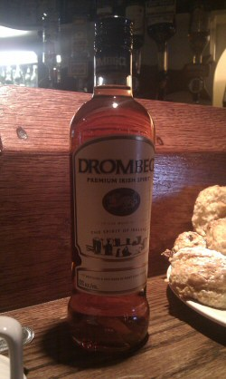

Spotted this one in Baltimore Co. Cork -
Drombeg Irish Spirit, 22% AVB
- 
- IMAG0435a.jpg (35.5 KiB) Viewed 1803 times
Interestingly, claims to be
distilled and matured in
West Cork.
from:
http://www.bizstartup.ie/news/item/1824 ... ecures-new "... Drombeg is unlike other brands on the market. “To date the consumer’s choice of drinks within the wood-matured brown beverage category was limited to high alcohol content products such as whiskey and brandy. On the other hand, the options within the long beverages category have been limited to fruit-derived or heavily sweetened products such as cream liqueurs, conventional whiskey liquors and schnapps-like products. Drombeg is unique in its class in providing a ‘savoury’, wood-matured brown spirit with the alcohol content of intermediate long beverages but with a sensory profile similar to standard high strength brown spirits.”
see
http://www.drombeg.org/Michael